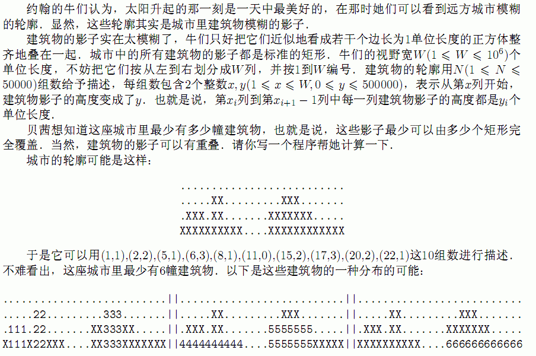
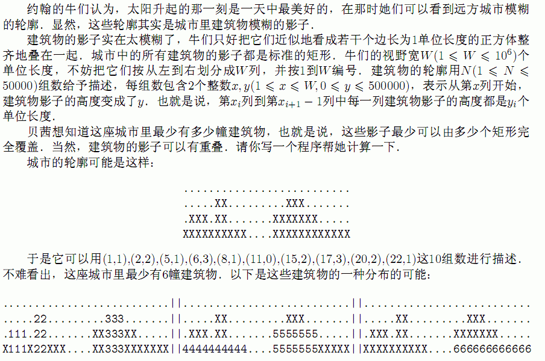

| F.A.Qs | Home | Discuss | ProblemSet | Status | Ranklist | Contest | 入门OJ | ModifyUser Xeonacid | Logout | 捐赠本站 |
|---|
| F.A.Qs | Home | Discuss | ProblemSet | Status | Ranklist | Contest | 入门OJ | ModifyUser Xeonacid | Logout | 捐赠本站 |
|---|

第1行：2个用空格隔开的整数N和W.
第2到N+1行：每行包括2个用空格隔开的整数x,y，其意义如题中所述．输入中的x严格递增，并且第一个z总是x．
输出一个整数，表示城市中最少包含的建筑物数量．